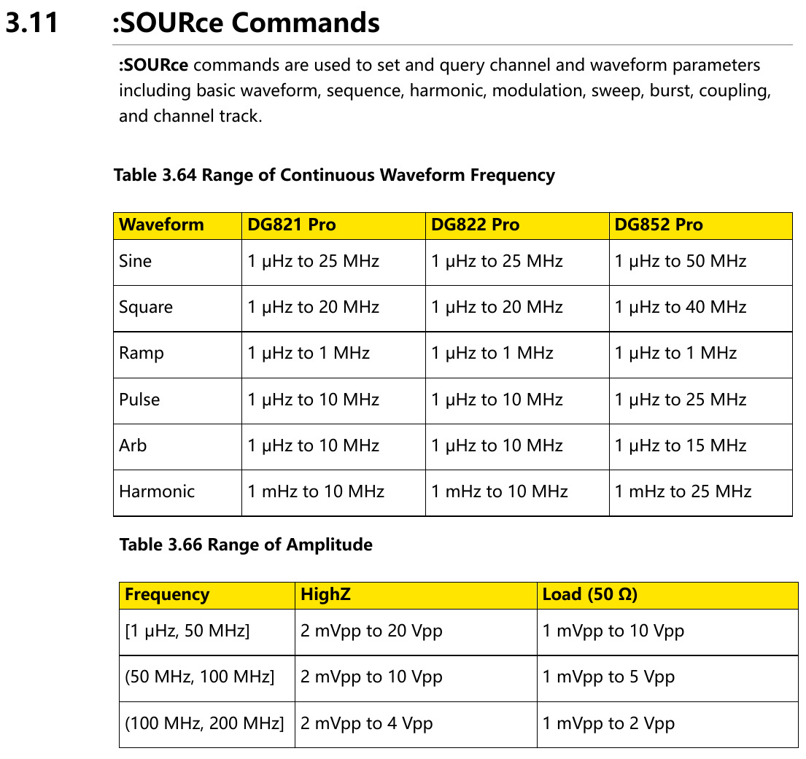
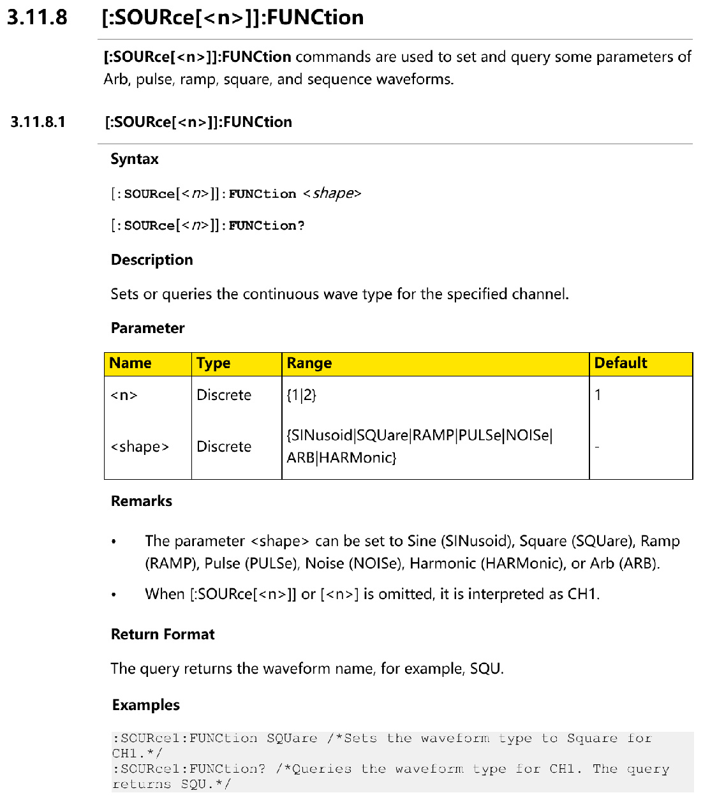
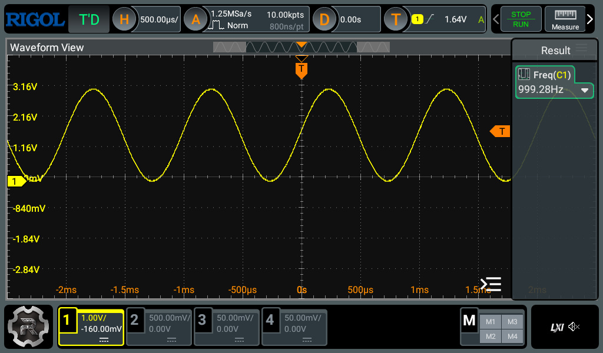
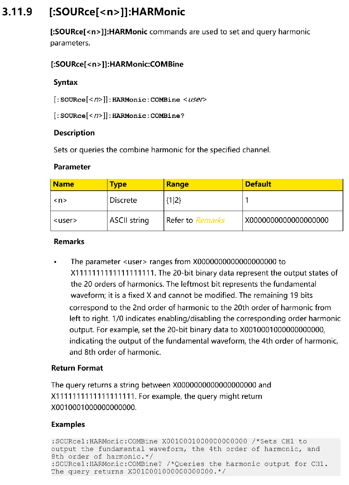
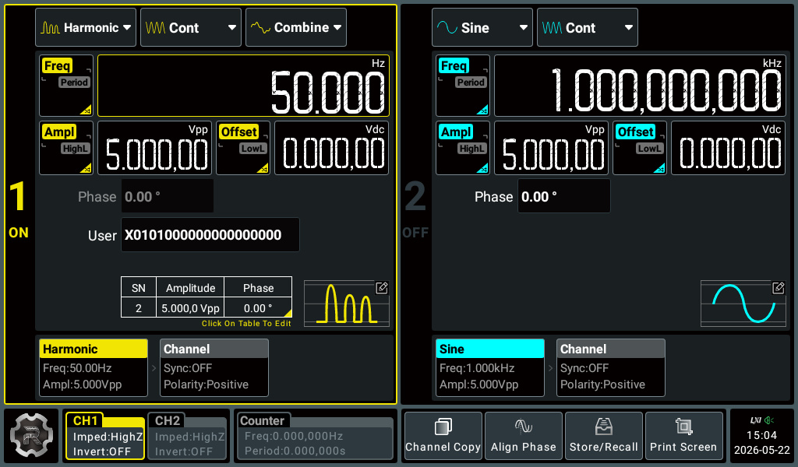
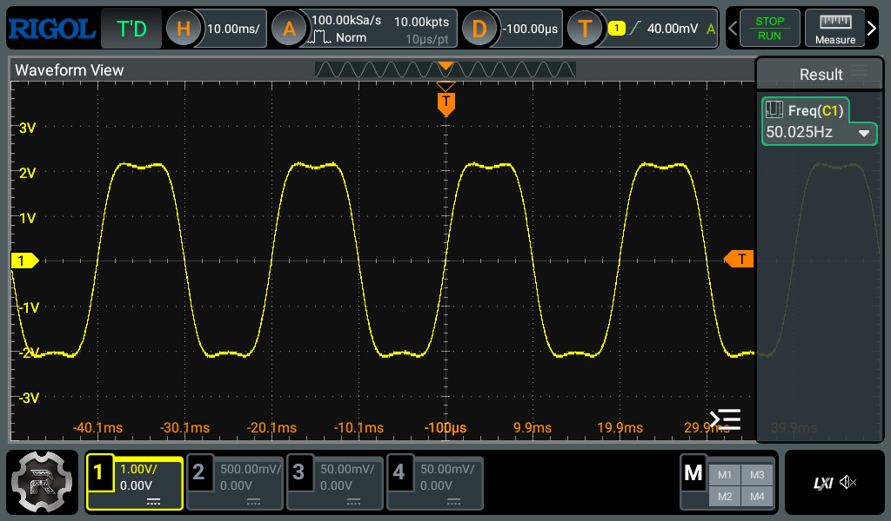
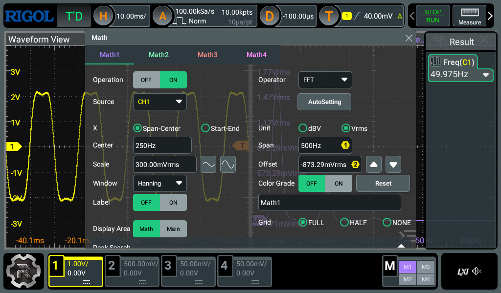
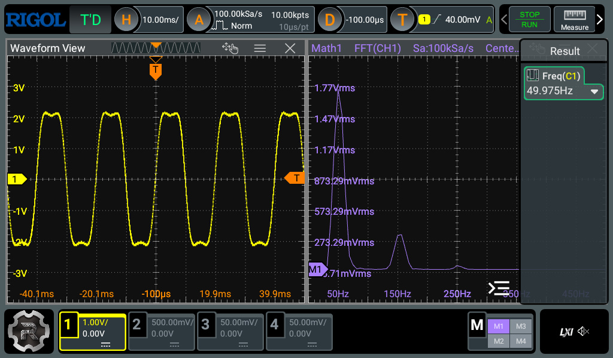
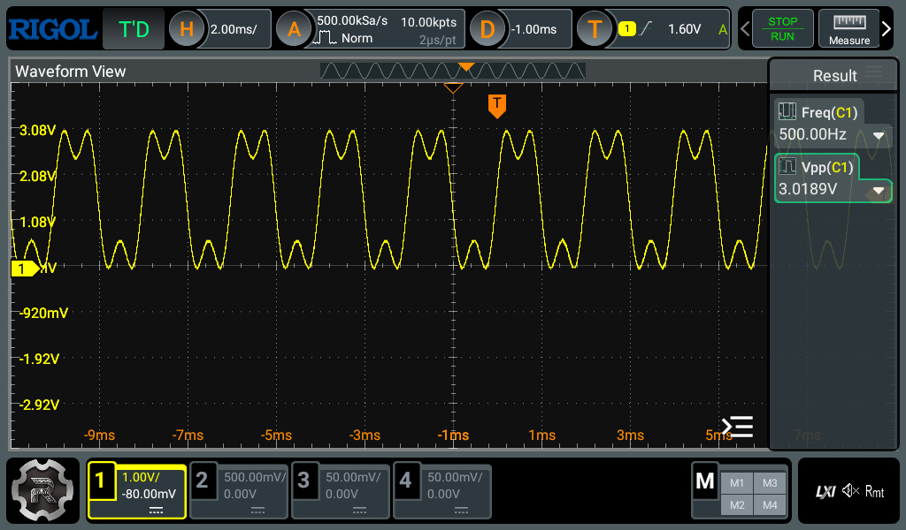
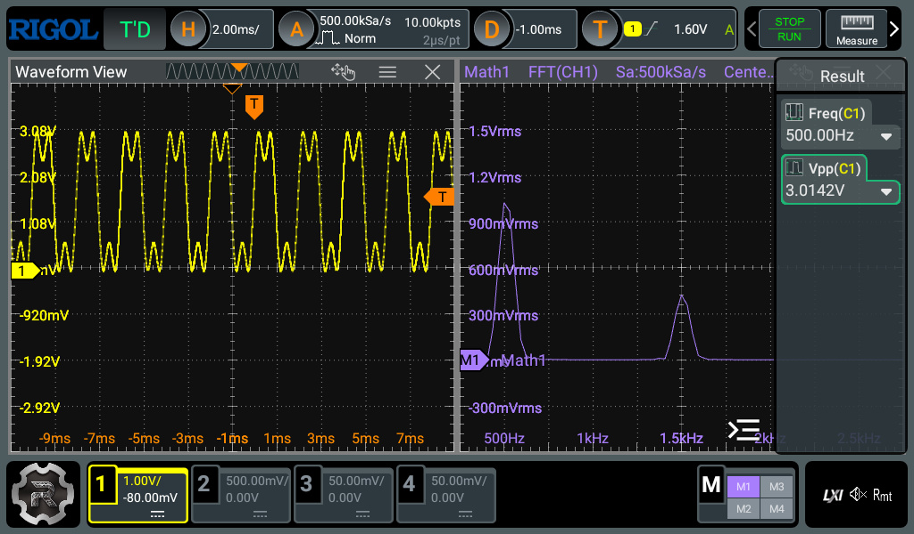

การเขียนโปรแกรม Python ควบคุมการทำงาน RIGOL DG822 Pro Function Generator#
Keywords: Python, LXI Standard, RIGOL DG822 Pro, SCPI
- RIGOL DG822 Pro Waveform Generator
- ตัวอย่างโค้ด Python: Single-Channel Sine Wave Output
- ตัวอย่างโค้ด Python: Dual Sine Wave Output with Phase Difference
- ตัวอย่างโค้ด Python: Harmonic Combination Output
- ตัวอย่างโค้ด Python: Arbitrary Waveform Output
RIGOL DG822 Pro Waveform Generator#
บทความนี้นำเสนอตัวอย่างการเขียนโค้ด Python เพื่อโปรแกรมผ่านเครือข่ายสำหรับอุปกรณ์ RIGOL DG822 Pro
อุปกรณ์รุ่นนี้ จัดอยู่ในกลุ่มเครื่องมือทดสอบและสร้างสัญญาณทางอิเล็กทรอนิกส์ หรือ T&M Instrument (Test and Measurement Instrument) หน้าที่หลักของอุปกรณ์ คือ การสร้างสัญญาณไฟฟ้า (Electrical Signal Generation) สำหรับใช้ในการทดลอง ทดสอบ และวิเคราะห์วงจรอิเล็กทรอนิกส์ต่าง ๆ
อุปกรณ์รุ่นนี้สามารถสร้างสัญญาณเอาต์พุตได้จำนวน 2 ช่องสัญญาณ (Dual Channel Output) โดยรองรับทั้งการสร้างสัญญาณมาตรฐานและสัญญาณ Arbitrary Waveform
คุณสมบัติหลัก
- ประเภทเครื่องมือ: Function / Arbitrary Waveform Generator
- จำนวนช่องสัญญาณ: 2 Channels
- ความถี่เอาต์พุตสูงสุด: 25 MHz
- ความละเอียดแนวตั้ง (Vertical Resolution): 16-bit (DAC Resolution)
- หน่วยความจำสำหรับ Arbitrary Waveform:
- 2 Mpts/CH (Default)
- 8 Mpts/CH (Optional)
- หน้าจอ: 7-inch Color Touchscreen
- Harmonic Generator: รองรับสูงสุด 20th Harmonic
- Frequency Counter: สูงสุด 500 MHz
- อินเทอร์เฟซ:
- USB Device / USB Host
- LAN
- Web Control (Built-in web server on port 80)
- แหล่งจ่ายไฟ: รองรับ USB Type-C Power Input
- รองรับ Arbitrary Waveform
- รองรับ LXI (LAN eXtensions for Instrumentation) / SCPI (Standard Commands for Programmable Instruments) Command ผ่าน USB/LAN
- ดูคู่มือการเขียนโปรแกรมได้จาก RIGOL Waveform Generators DG800 Pro - Programming Guide
รูปแบบสัญญาณมาตรฐานที่รองรับ
- Sine
- Square
- Ramp
- Pulse
- Noise
- DC
- Arb (Arbitrary)
- Harmonic
โหมดการทำงาน
- Continuous
- Sweep
- Burst
- Modulation (AM, FM, ASK, FSK, PSK, ...)
- Sequence

รูป: ช่วงความถี่และแรงดันเอาต์พุต สำหรับการใช้คำสั่ง :SOURce สำหรับ DG822 Pro สร้างสัญญาณแบบต่อเนื่อง (Continuous Waveform)

รูป: ตัวอย่างคำสั่ง :SOURce<n>:FUNCtion เพื่อเลือกรูปแบบของฟังก์ชันสำหรับเอาต์พุต
ตัวอย่างโค้ด Python: Single-Channel Sine Wave Output#
ตัวอย่างโค้ดภาษา Python นี้สาธิตการเชื่อมต่อกับอุปกรณ์ DG822 Pro โดยจะต้องมีการตั้งค่าการเชื่อมต่อผ่านเครือข่าย LAN และเปิดใช้งาน DHCP Server เพื่อให้อุปกรณ์ได้รับ IP Address โดยอัตโนมัติ
การเชื่อมต่อกับอุปกรณ์ใช้วิธีสร้าง TCP Socket และส่งคำสั่งควบคุมในรูปแบบ SCPI
ไปยังอุปกรณ์ ตัวอย่างเช่น เริ่มต้นด้วยคำสั่ง *IDN?
ซึ่งหากเชื่อมต่อได้ถูกต้อง อุปกรณ์จะตอบกลับด้วยข้อความแสดงข้อมูลของอุปกรณ์
หลังจากนั้นโปรแกรมจะส่งคำสั่งเพื่อตั้งค่าให้ช่องเอาต์พุต CH1 สร้างสัญญาณคลื่นไซน์ที่มีความถี่ 1kHz, ขนาดสัญญาณ 3Vpp (Peak-to-Peak Voltage) และค่า Voffset (DC Offset Voltage) = 1.5V
ในโค้ดตัวอย่างนี้มีการใช้คำสั่ง SCPI สำหรับ DG822 Pro ดังนี้
:SOUR1:FUNC SIN: เลือก Source Channel 1 และสร้างสัญญาณตามฟังก์ชันรูปไซน์ (Sine Wave):SOUR1:FREQ 1000: ตั้งค่าความถี่ ให้ช่องเอาต์พุต Source Channel 1 เท่ากับ 1 kHz:SOUR1:VOLT 2.0: ตั้งค่าแอมพลิจูด ให้ช่องเอาต์พุต Source Channel 1 เท่ากับ 2Vpp (Peak-to-Peak Voltage):SOUR1:VOLT:OFFS 0: ตั้งค่า DC Offset ให้ช่องเอาต์พุต Source Channel 1 เท่ากับ 0V:SOUR1:PHAS 0: ตั้งค่า Phase ให้ช่องเอาต์พุต Source Channel 1 เท่ากับ 0°:OUTP1 ON: เปิดเอาต์พุต Source Channel 1
"""
This script tests communication with a Rigol DG822 Pro waveform generator
using raw TCP sockets over LXI/LAN.
Default SCPI Port: 5025
Functions:
- Connect to instrument
- Query *IDN?
- Configure CH1
- Generate sine wave
- Enable output
Tested using:
Python 3.x
LXI / Ethernet
TCP socket SCPI
"""
import socket
import time
DG822_IP = "10.42.0.166" # Set the IP address of the instrument
DG822_PORT = 5025
SOCKET_TIMEOUT = 3.0
sock = None
def scpi_write(sock, cmd):
if not cmd.endswith("\n"):
cmd += "\n"
print(f"Send SCPI command: {cmd.strip()}")
sock.sendall(cmd.encode())
def scpi_query(sock, cmd):
scpi_write(sock, cmd)
response = sock.recv(1024).decode().strip()
return response
try:
print("Connecting to DG822 Pro...")
sock = socket.socket(
socket.AF_INET,
socket.SOCK_STREAM
)
sock.settimeout(SOCKET_TIMEOUT)
sock.connect((DG822_IP, DG822_PORT))
print("Connected.")
# Query Instrument Identification
idn = scpi_query(sock, "*IDN?")
print(idn)
# Configure CH1 to output a sine wave signal
# (1kHz, Vpp=3V, Voffset=1.5V)
scpi_write(sock, ":SOUR1:FUNC SIN")
# Frequency = 1kHz
scpi_write(sock, ":SOUR1:FREQ 1000")
# Amplitude = 3Vpp
scpi_write(sock, ":SOUR1:VOLT 3.0")
# Offset = 1.5V
scpi_write(sock, ":SOUR1:VOLT:OFFS 1.5")
# Phase = 0.0 degree
scpi_write(sock, ":SOUR1:PHAS 0.0")
# Enable CH1 Output
scpi_write(sock, ":OUTP1 ON")
print("\nCH1 enabled.")
except Exception as e:
print(f"\nERROR: {e}")
finally:
try:
# Disable output before exit (optional)
#scpi_write(sock, ":OUTP1 OFF")
if sock is not None:
# Close the TCP socket
sock.close()
except:
pass
print("TCP Socket closed.")

รูป: การใช้ออสซิลโลสโคปแสงดรูปคลื่นสัญญาณเอาต์พุตที่ได้จาก DG822 Pro
ตัวอย่างโค้ด Python: Dual Sine Wave Output with Phase Difference#
โค้ดตัวอย่างนี้สาธิตการสร้างสัญญาณรูปไซน์สำหรับเอาต์พุตทั้งสองช่องของอุปกรณ์ โดยกำหนดให้สัญญาณทั้งสองมีความต่างเฟส (Phase Difference) เช่น 90 องศา
คำสั่งที่สำคัญในตัวอย่างนี้ คือ :PHAS:SYNC ซึ่งใช้สำหรับซิงโครไนซ์การทำงานของทั้งสองช่องสัญญาณ
โดยทำให้จุดเริ่มต้นเฟสของสัญญาณทั้งสองช่องสอดคล้องกัน (Synchronized)
ดังนั้น ความสัมพันธ์ของเฟสระหว่าง CH1 และ CH2 จะเป็นไปตามค่าที่กำหนดไว้ เช่น 0° และ +90°
"""
Rigol DG822 Pro - Dual-Channel Sine Wave Example
CH1: Sine wave, Frequency = 1 kHz, Vpp = 2 V, Offset = 0 V, Phase = 0 deg
CH2: Sine wave, Frequency = 1 kHz, Vpp = 2 V, Offset = 0 V, Phase = +90 deg
Communication:
LXI / TCP Socket / SCPI
"""
import socket
DG822_IP = "10.42.0.166"
DG822_PORT = 5025
SOCKET_TIMEOUT = 2.0
FREQUENCY = 1000 # Hz
AMPLITUDE = 2.0 # Vpp
OFFSET = 0.0 # V
sock = None
def scpi_write(sock, cmd):
if not cmd.endswith("\n"):
cmd += "\n"
print(f"Send SCPI command: {cmd.strip()}")
sock.sendall(cmd.encode())
try:
print("Connecting to DG822 Pro...")
sock = socket.socket(
socket.AF_INET,
socket.SOCK_STREAM
)
sock.settimeout(SOCKET_TIMEOUT)
sock.connect((DG822_IP, DG822_PORT))
print("Connected.")
# Configure CH1
scpi_write(sock, ":SOUR1:FUNC SIN")
scpi_write(sock, f":SOUR1:FREQ {FREQUENCY}")
scpi_write(sock, f":SOUR1:VOLT {AMPLITUDE}")
scpi_write(sock, f":SOUR1:VOLT:OFFS {OFFSET}")
scpi_write(sock, ":SOUR1:PHAS 0")
# Configure CH2
scpi_write(sock, ":SOUR2:FUNC SIN")
scpi_write(sock, f":SOUR2:FREQ {FREQUENCY}")
scpi_write(sock, f":SOUR2:VOLT {AMPLITUDE}")
scpi_write(sock, f":SOUR2:VOLT:OFFS {OFFSET}")
# CH2 phase offset = +90 degrees
# CH1 = reference and CH2 = lead by +90°
scpi_write(sock, ":SOUR2:PHAS 90")
# Enable Outputs
scpi_write(sock, ":OUTP1 ON")
scpi_write(sock, ":OUTP2 ON")
# Synchronize both outputs
scpi_write(sock, ":PHAS:SYNC")
print("\nCH1 and CH2 enabled.")
print("\nExpected:")
print("CH1 = reference sine wave")
print("CH2 = +90 degree phase shifted sine wave")
except Exception as e:
print(f"\nERROR: {e}")
finally:
try:
# Turn both channels OFF (optional)
#scpi_write(sock, ":OUTP1 OFF")
#scpi_write(sock, ":OUTP2 OFF")
if sock is not None:
# Close the TCP socket
sock.close()
except:
pass
print("Socket closed.")
ตัวอย่างโค้ด Python: Harmonic Combination Output#
ตัวอย่างนี้ใช้ฟังก์ชันภายในของเครื่องกำเนิดสัญญาณที่เรียกว่า Harmonic Waveform Generator สำหรับสร้างสัญญาณที่ประกอบด้วยความถี่มูลฐาน (Fundamental Frequency) ร่วมกับฮาร์มอนิก (Harmonics) มีการตั้งค่าดังต่อไปนี้
- ความถี่มูลฐาน (Fundamental Frequency) กำหนดไว้ที่ 50 Hz
- เอาต์พุตใช้ CH1
- มีการเพิ่มฮาร์มอนิก (Harmonic Components) อันดับที่ 3 และ 5 (3rd Harmonic = 150 Hz, 5th Harmonic = 250 Hz)
- สัญญาณเอาต์พุตถูกสร้างจากการรวมสัญญาณหลายความถี่เข้าด้วยกัน
คำสั่ง SCPI ที่สำคัญ มีดังนี้
:SOUR1:FUNC HARM: คำสั่งนี้ใช้กำหนดให้ CH1 ทำงานในโหมด Harmonic Function:SOUR1:FREQ 50: กำหนดความถี่มูลฐาน (Fundamental Frequency) ของสัญญาณเป็น 50 Hz:SOUR1:VOLT 5.0: กำหนดขนาดแรงดันเอาต์พุตรูปไซน์ 50Hz เป็น 5 Vpp:SOUR1:VOLT:OFFS 0.0: กำหนดค่า DC Offset ของสัญญาณเป็น 0V:SOUR1:HARM:TYPE COMBคำสั่งนี้กำหนดให้ใช้โหมด Harmonic Combination:SOUR1:HARM:COMB X0101000000000000000: คำสั่งนี้ใช้กำหนดชุดของฮาร์มอนิกที่จะเปิดใช้งาน (1หมายถึง "เลือก" และ0"ไม่เลือก" โดยเริ่มจากซ้ายไปขวาถัดจากXเป็นฮาร์มอนิก อันดับที่ 2 ไปตามลำดับ ):SOUR1:HARM:COMB:AMPL 3,1.0: กำหนดค่าแอมพลิจูดให้ฮาร์มอนิกอันดับที่ 3:SOUR1:HARM:COMB:AMPL 5,0.1: กำหนดค่าแอมพลิจูดให้ฮาร์มอนิกอันดับที่ 5

รูป: คำสั่ง :SOURce:HARMonic สำหรับสร้างสัญญาณฮาร์มอนิก เช่น แบบผสม
"""
Rigol DG822 Pro - Use Internal HARMONIC Function
This example uses the DG822 Pro built-in harmonic generator function.
CH1 Output: Fundamental frequency = 50 Hz, Harmonic waveform enabled
"""
import socket
import time
# CONFIGURATION
DG822_IP = "10.42.0.166"
DG822_PORT = 5025
SOCKET_TIMEOUT = 2.0
FUNDAMENTAL_FREQ = 50 # Hz
OUTPUT_VPP = 5.0 # Vpp
OUTPUT_OFFSET = 0.0 # V
sock = None
def scpi_write(sock, cmd):
if not cmd.endswith("\n"):
cmd += "\n"
print(f"Send SCPI command: {cmd.strip()}")
sock.sendall(cmd.encode())
def scpi_query(sock, cmd):
scpi_write(sock, cmd)
response = sock.recv(1024).decode().strip()
return response
try:
print("Connecting to DG822 Pro...")
sock = socket.socket(
socket.AF_INET,
socket.SOCK_STREAM
)
sock.settimeout(SOCKET_TIMEOUT)
sock.connect(
(DG822_IP, DG822_PORT)
)
print("Connected.")
# Select Harmonic Function
scpi_write(sock, ":SOUR1:FUNC HARM")
# Fundamental frequency
scpi_write(sock, f":SOUR1:FREQ {FUNDAMENTAL_FREQ}")
# Output amplitude
scpi_write(sock, f":SOUR1:VOLT {OUTPUT_VPP}")
# DC offset
scpi_write(sock, f":SOUR1:VOLT:OFFS {OUTPUT_OFFSET}")
# Configure Harmonics
scpi_write(sock, ":SOUR1:HARM:TYPE COMB")
# Combine 3rd and 5th harmonic
scpi_write(sock, ":SOUR1:HARM:COMB X0101000000000000000")
scpi_write(sock, ":SOUR1:HARM:COMB:AMPL 3,1.0") # 2Vpp
scpi_write(sock, ":SOUR1:HARM:COMB:AMPL 5,0.1") # 1Vpp
# Enable Output
scpi_write(sock, ":OUTP1 ON")
print("\nCH1 Harmonic waveform enabled.")
except Exception as e:
print(f"\nERROR: {e}")
finally:
try:
#scpi_write(sock, ":OUTP1 OFF")
if sock is not None:
# Close the TCP socket
sock.close()
except:
pass
print("Socket closed.")

รูป: หน้าจอของ DG822 Pro เมื่อมีการโปรแกรมให้สร้างสัญญาณเอาต์พุตในโหมด Harmonic

รูป: รูปคลื่นสัญญาณเอาต์พุตที่ได้จากผลรวมคลื่นไซน์ 50Hz, 150Hz และ 250Hz

รูป: ตัวอย่างการตั้งค่าฟังก์ชัน MATH -> FFT สำหรับออสซิลโลสโคป DHO814

รูป: การวัดคลื่นสัญญาณในโหมด Y-T พร้อมกับการแสดงผลในโหมด Math -> FFT
จากรูป FFT Spectrum จะเห็นได้ว่า ในช่วงความถี่ 50Hz, 150Hz และ 250Hz มีแอมพลิจูดมากกว่า 0V
ตัวอย่างโค้ด Python: Arbitrary Waveform Output#
โค้ดตัวอย่างนี้สาธิตการโปรแกรมให้ Rigol DG822 Pro ทำงานในโหมด Arb (Arbitrary) Waveform
โดยโปรแกรมจะสร้างชุดข้อมูลตัวอย่างของรูปคลื่นขึ้นมาในหน่วยความจำของคอมพิวเตอร์
จากนั้นอัปโหลดข้อมูลดังกล่าวไปเก็บไว้ในหน่วยความจำภายในของอุปกรณ์ในรูปแบบไฟล์ .arb
ในตัวอย่างนี้ใช้คำสั่ง :MMEM:TRAC:ARB:DATA:DAC สำหรับส่งข้อมูลตัวอย่างของรูปคลื่นแบบ DAC Code
โดยจะต้องมีการสร้างไฟล์ .arb เก็บไว้ในหน่วยความจำภายในเครื่องกำเนิดสัญญาณ
จากนั้นจึงโหลดไฟล์ดังกล่าวเข้าสู่โหมด Advanced Arb ด้วยคำสั่ง :SOUR1:FUNC:SEQ:ARB:LOAD
เพื่อสร้างสัญญาณเอาต์พุตช่องที่ 1
หลังจากโหลดรูปคลื่นแล้ว โปรแกรมจะกำหนดอัตรา Sample Rate แอมพลิจูด และ DC Offset ก่อนเปิดเอาต์พุตที่ช่อง CH1 เพื่อสร้างสัญญาณ Arbitrary Waveform ตามข้อมูลที่อัปโหลดไว้
ชุดข้อมูลที่ใช้สร้างไฟล์ .arb และมีจำนวนข้อมูลเท่ากับ 2,000 จะเป็นชุดของตัวเลขตัวอย่าง (Sample Data)
ที่แทนค่าระดับแรงดันของรูปคลื่นในแต่ละช่วงเวลา โดยในตัวอย่างนี้ข้อมูลจะถูกเก็บในรูปของค่า 16-bit signed integer
(หรือค่า DAC code) อยู่ในช่วง
ในโค้ดนี้ มีการสร้างและใช้ฟังก์ชัน make_harmonic_sum() เพื่อจะสร้างข้อมูลตัวอย่างของรูปคลื่นที่เกิดจากการรวมกันของ
คลื่นไซน์พื้นฐาน (Fundamental) และ ฮาร์มอนิกอันดับ 3 (3rd harmonic) เป็นตัวอย่าง
จากนั้นจึงสเกลให้อยู่ในช่วง [-1, +1] แล้วแปลงเป็นค่า DAC Code แบบ Signed 16-bit
ชุดข้อมูลจะใช้กับอัตรา Sample Rate = 1MSa/sec ดังนั้นถ้ามีจำนวนข้อมูล 2,000 สำหรับข้อมูลหนึ่งคาบ จะได้ความถี่ของสัญญาณเอาต์พุตเท่ากับ 1,000,000 / 2,000 = 500 Hz ดังนั้นจำนวนข้อมูลต่อหนึ่งคาบจึงส่งผลต่อความถี่ที่ได้ ในตัวอย่างนี้ สัญญาณเอาต์พุตจะถูกกำหนดให้มีแอมพลิจูด 3Vpp และมี DC Offset = 1.5V
"""
Rigol DG822 Pro - LXI / TCP Socket SCPI Communication
Loads a user-defined waveform into an internal-memory .arb file using
:MMEM:TRAC:ARB:DATA:DAC, then plays it back on CH1.
- Default SCPI raw socket port is 5025.
"""
import socket
import time
import numpy as np
DG822_IP = "10.42.0.166"
DG822_PORT = 5025
SOCKET_TIMEOUT = 10.0
ARB_FILE = r"INT:\\USERWAVE.arb"
NPTS = 2000 # Number of samples in total
CHUNK_SAMPLES = 500 # Number of samples per chunk
PLAY_SRATE = 1_000_000 # 1 MSa/s
PLAY_VPP = 3.0 # 3 Vpp
PLAY_OFFSET = 1.5 # 1.5 Vdc
sock = None
def make_harmonic_sum(n, k1=1, k2=3, a1=1.0, a2=0.4, phase2=0.0):
"""Sum of two harmonic sines over an n-point buffer.
k1 and k2 should be integers; k2 is typically an integer multiple of k1
(k2 = m*k1 -> m-th harmonic of the fundamental).
Returns int16 DAC codes in [-32767, +32767].
"""
t = np.arange(n, dtype=np.float64) / n # [0,1)
fund = a1 * np.sin(2.0 * np.pi * k1 * t)
harm = a2 * np.sin(2.0 * np.pi * k2 * t + phase2)
y = fund + harm
y /= np.max(np.abs(y)) # normalize to [-1, 1]
return np.int16(np.round(y * 32767))
def make_waveform(n):
"""Default waveform: fundamental + 3rd harmonic at 40% amplitude."""
return make_harmonic_sum(n, k1=1, k2=3, a1=1.0, a2=0.4)
def scpi_write(sock, cmd):
if not cmd.endswith("\n"):
cmd += "\n"
sock.sendall(cmd.encode("ascii"))
def scpi_write_quiet(sock, cmd):
if not cmd.endswith("\n"):
cmd += "\n"
sock.sendall(cmd.encode("ascii"))
def scpi_query(sock, cmd):
scpi_write(sock, cmd)
# Catalog replies can exceed one recv() and always end with newline.
buf = b""
while b"\n" not in buf:
chunk = sock.recv(4096)
if not chunk:
break
buf += chunk
response = buf.decode(errors="replace").strip()
print(f"RX: {response}")
return response
def send_dac_chunks(sock, arb_path, samples, chunk):
n = len(samples)
i = 0
while i < n:
end_i = min(i + chunk, n)
if i == 0 and end_i == n:
flag = "END"
elif i == 0:
flag = "HEAD"
elif end_i == n:
flag = "END"
else:
flag = "CONT"
csv = ",".join(str(int(v)) for v in samples[i:end_i])
scpi_write_quiet(sock, f":MMEM:TRAC:ARB:DATA:DAC {arb_path},{flag},{csv}")
print(f"TX: :MMEM:TRAC:ARB:DATA:DAC {arb_path},{flag},"
f"<{end_i - i} samples> #{i}")
i = end_i
time.sleep(0.5)
try:
print("Connecting to DG822 Pro...")
sock = socket.socket(socket.AF_INET, socket.SOCK_STREAM)
sock.settimeout(SOCKET_TIMEOUT)
sock.connect((DG822_IP, DG822_PORT))
print("Connected.")
scpi_query(sock, "*IDN?")
scpi_write(sock, "*CLS")
scpi_write(sock, "*RST")
time.sleep(1.0)
# Build the user-defined waveform and upload it as a .arb file.
samples = make_waveform(NPTS)
print(f"\nUploading {len(samples)} samples to {ARB_FILE} ...")
send_dac_chunks(sock, ARB_FILE, samples, CHUNK_SAMPLES)
scpi_query(sock, "*OPC?") # block until write completes
scpi_query(sock, ":SYST:ERR?")
# Enable Advanced Arb mode on CH1, then load the .arb file.
scpi_write(sock, ":SOUR1:FUNC:SEQ:ARB:STAT ON")
scpi_query(sock, "*OPC?")
scpi_write(sock, f":SOUR1:FUNC:SEQ:ARB:LOAD {ARB_FILE}")
scpi_query(sock, "*OPC?")
scpi_query(sock, ":SYST:ERR?")
time.sleep(1.0)
# Configure playback and enable output.
scpi_write(sock, f":SOUR1:FUNC:SEQ:ARB:SRAT {PLAY_SRATE}")
scpi_write(sock, ":SOUR1:FUNC:SEQ:ARB:FILT NORM")
scpi_write(sock, f":SOUR1:VOLT {PLAY_VPP}")
scpi_write(sock, f":SOUR1:VOLT:OFFS {PLAY_OFFSET}")
scpi_write(sock, ":OUTP1 ON")
scpi_query(sock, ":SYST:ERR?")
print("\nCH1 enabled with user-defined Arb waveform.")
except Exception as e:
print(f"\nERROR: {e}")
finally:
try:
if sock is not None:
# Close the TCP socket
sock.close()
except Exception:
pass
print("Socket closed.")

รูป: การวัดคลื่นสัญญาณเอาต์พุตด้วยออสซิลโลสโคป

รูป: การวัดคลื่นสัญญาณในโหมด Math -> FFT
▷ กล่าวสรุป#
บทความนี้สาธิตการเขียนโค้ด Python เพื่อเชื่อมต่อกับ DG822 Pro Waveform Generator ผ่านทางเครือข่าย LAN และใช้คำสั่ง SCPI เช่น การตั้งค่าและสร้างสัญญาณเอาต์พุต
This work is licensed under a Creative Commons Attribution-ShareAlike 4.0 International License.
Created: 2026-05-24 | Last Updated: 2026-05-24